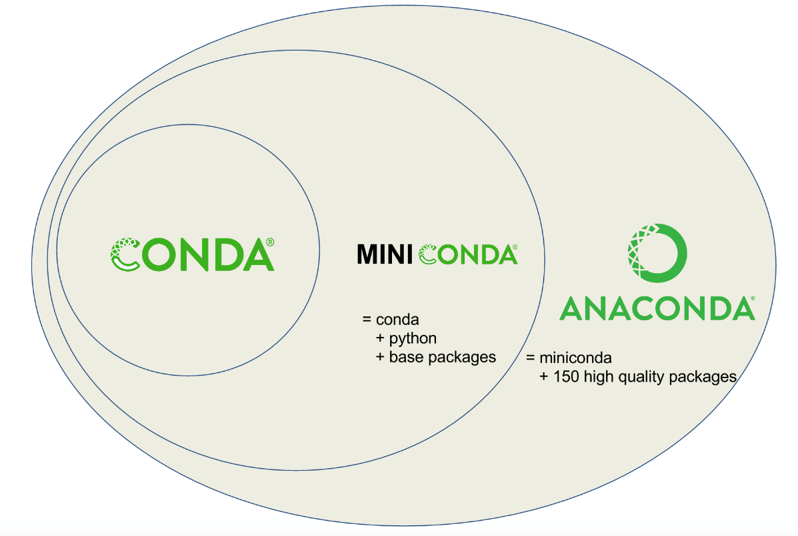
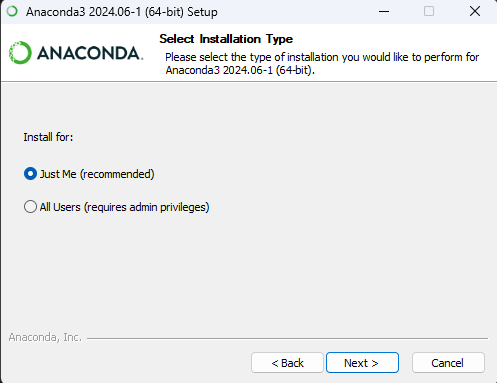
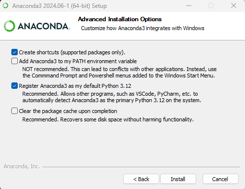
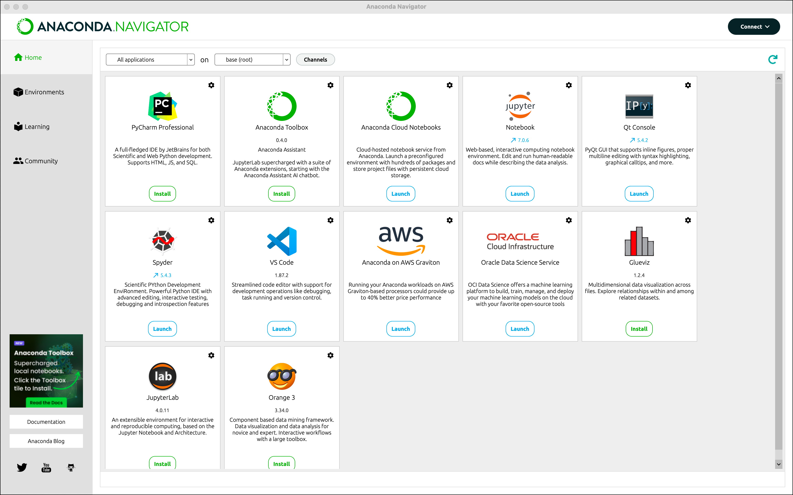
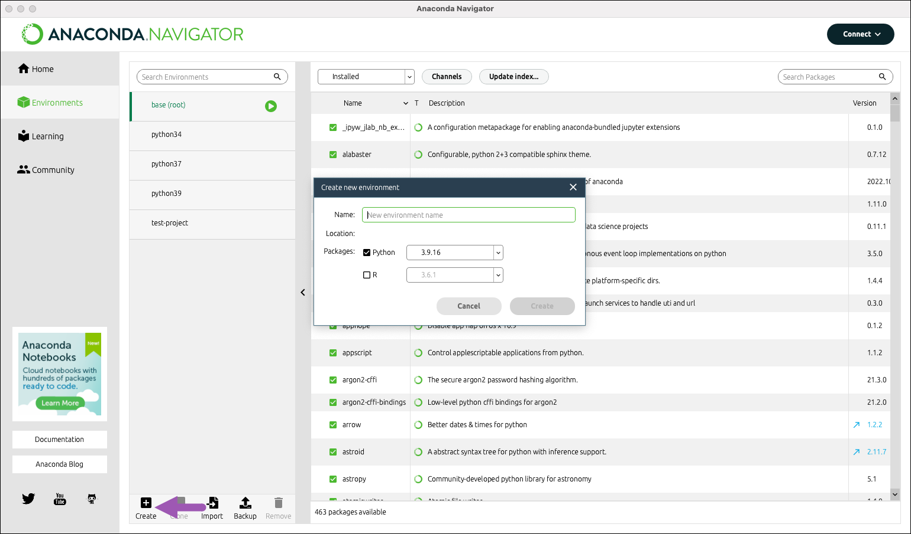
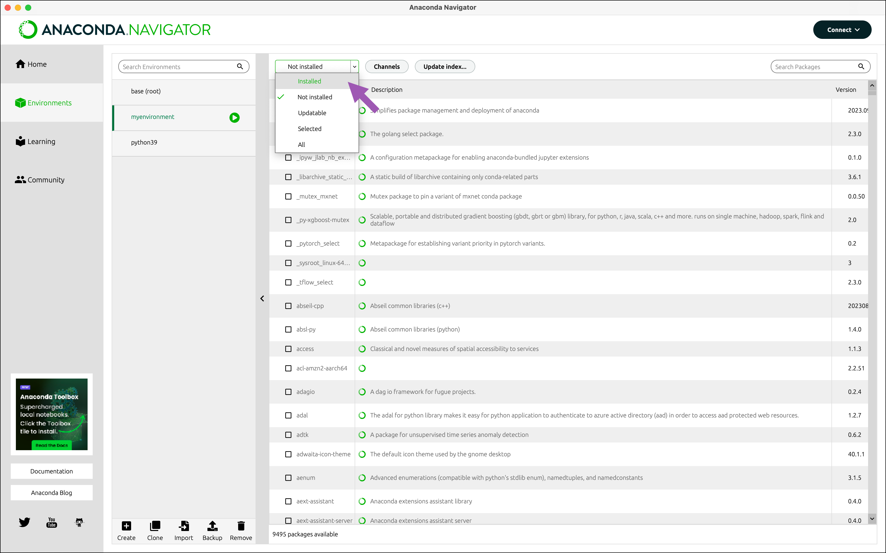
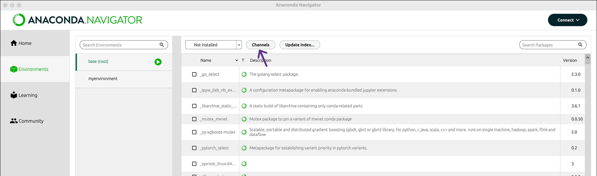
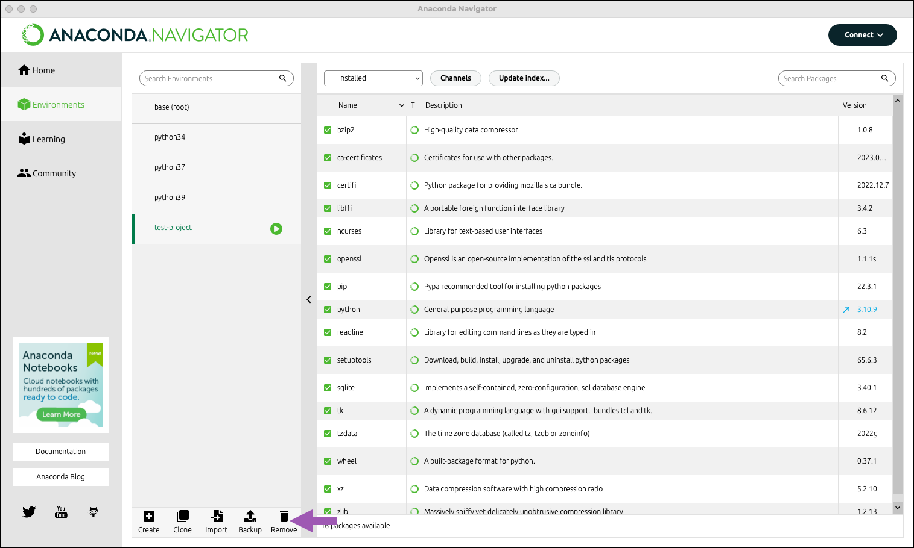
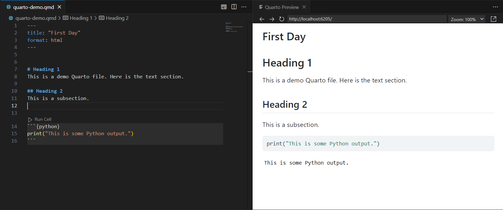

This is some Python output.Session 1. Python Installation
Welcome to the first session of the Introduction to Python Workshop series!
This guide will you walk through the steps to install Python to your computer and work interactively with it in Visual Studio Code. After the session, you will acquire basic knowledge of the following:
Install Python via Anaconda distribution.
Create, activate, and install packages to Python virtual environments.
Create Quarto files and import and visualize data with Python libraries.
1.1 Introduction to Tools
Anaconda

Anaconda is an open-source distribution of Python, designed for scientific computing, data science, machine learning, and AI development.
The Anaconda distribution comes with the desktop Anaconda Navigator application, the latest version of Python, and ~150 pre-downloaded libraries.
It also comes with conda, a cross-platform package and environment manager. Conda is the virtual environment manager that helps install packages from the Anaconda repositories (also called “channels”). It supports more than just Python packages but numerous other programming languages like R, Java, etc.
Difference Between Conda and Pip
Long story short–Pip is for Python libraries only, while conda can install packages for any software (including python).
It is generally recommended that you only use conda install when in a conda environment, as anything installed via pip won’t be recognized by conda and vice versa. Using the two interchangeably might overwrite or break packages and mess up the environment.
What if the Python package is unavailable through conda?
In these scenarios where the package you need is not built under conda, it makes sense to use pip to install packages within the conda environment. The best practice is to install everything with conda first, then use pip if needed.
Check out the blog for more information on using pip in a conda environment.

In this tutorial, we are going to install the full Anaconda distribution and learn to use the features of its Anaconda Navigator desktop application. This allows us to manage packages and environments without necessarily needing to know the conda terminal commands.
Visual Studio Code

Visual Studio Code (VS Code) is one of the most popular open-source code editors with many features.
- Multi-Language Programming. You can code in almost any major programming languages in VS Code including Python, R, C/C++, JavaScript, etc.
- Build-In Git Source Control. VS Code automatically recognizes and uses the computer’s Git installation to allow project version control. You can easily track changes, stage, and commit changes to your working branch.
- Variety of Project Development Support. You can add extra features such as language packs, debugging tools, Git/Github features, and remote server connector by installing extensions from the Extension Marketplace.
Go to 1.4 Work with Jupyter/Quarto in VS Code for guide on how to get started with VS Code.
Quarto

Quarto is an open-source scientific and technical publishing system.
Think of Quarto .qmd as similar to R Markdown .Rmd files that combines executable code chunks with text components and figures and allows generating outputs as PDF, HTML, Docx, and slideshow presentations.
But Quarto has more:
Compatibility with multiple IDEs. You can not only work with Quarto
.qmdin RStudio, but also VS Code, Jupyter Lab, etc.Mutli-lingual support. Unlike R Markdown which is dependent on R, Quarto does not require R. It supports embedded Python, JavaScript, and Julia executable code by simply specifying the language name in the braces on top of a code chunk (e.g.,
```{python}).Multi-engine support. Don’t worry if you are an R Markdown or Jupyter Notebook user! Qurato also works with
.Rmdand.ipynbfiles and will automatically deploy either the knitr or jupyter engine depending on the file type that you are rendering.
In summary, Quarto is easy for R users to transition into due to similarities with the R Markdown. It also includes more functionality and flexibility, making it a great tool for learning Python.
1.2 Install Anaconda
First, Download the Anaconda Installer. Remember to choose the right installer for your computer’s operating system (i.e., MacOS/Linux, Windows).
Run the installer and follow the steps.
For Windows:
Run the
.exeinstaller.Click
Next >. When asked to select the type of the installation, select theJust Meoption.
Installing for current user onlyYou don’t need to install for all users most of the time. This option requires admin privileges which you might not have on your MSK laptop.
Choose installation location. You can keep the default location. E.g.,
C:\Users\<user_name>\AppData\Local\Anaconda3.Now, going to the advanced installation options. Do not add anaconda3 to my PATH environment variable in Windows, as it might cause potential conflicts with your other Python installations.

Do not add Anaconda to PATHIt is recommended that you do not add anaconda3 to system’s PATH environment variable, as it might lead to conflict with your other Python installations.
Instead, later run
conda initin Anaconda Prompt to configure the terminal shell (bash, zsh, and cmd) to recognizecondaall the time.
For MacOS:
Run the
.pkginstaller.When asked for the installation location, keep the default location:
/home/<your_user>/miniconda3.When asked if you want to initialize conda, answer YES (remember this because the default answer is set to no). This enables access to conda from the standard terminal (bash, cmd) every time you open it.
Finish the installation.
Finally, you can check that conda is properly installed.
- For Windows
- Open the Start Menu of Windows and look for Anaconda Prompt. Open it.
- Type
conda infointo the Anaconda Prompt terminal. You should see details about your current conda installation. This means that conda is properly installed and initialized.
- For MacOS:
Open a new terminal.
You should see
(base)in the beginning of the prompt. This means that conda is properly installed and the base environment is activated.Similarly, write
canda infoin the terminal. You should see the info about the current conda installation returned.
1.3 Virtual Environments
What is a virtual environment?
Environments are isolated, independent installations of a programming language and groups of packages, that don’t interfere with each other.
For example, you may have a Python version 3.8 installed on your computer as the System Python. Meanwhile, you can install as many virtual environments as you want with the same or different Python versions and set of packages.
Why virtual environments?
You do not necessarily need environemnts. However, you may find it useful in many cases.
Avoid Conflicts. When you need libraries that are not compatibles with your system settings, such as an older Python version or conflicting dependencies. Creating a virtual environment can resolve the conflicts and changing it won’t affect your other environments.
Sharing Environment Setting. You can also share your environment and the list of dependencies with someone with a copy of the
environment.yamlfile.Easy Management. When your work is temporary or that you simply want to experiment things without having to worry about things breaking, you can work within a virtual environemnt and later delete it when needed.
1.3.1 Creating a Virtual Environment (with GUI)
One option is to create the environment in the Anaconda Navigator graphical user interface (GUI). This way is straightforward and does not require command line skills.
Open the Anaconda Navigator application.

The Home page shows tabs for software available to be installed or launched in the Navigator (E.g., RStudio, VS Code, JupyterLab, and Jupyter Notebook). The first dropdown menu at the top allows filtering applications shown below.
From the second dropdown menu, you may switch to other conda environments that you have created. Then you may launch applications from within the environment you selected.
Create the first virtual environment.
Select the Environments tab on the left. Click Create as shown below:

Customizing environment name and Python version.
In the environment Name field, type a descriptive name for your environment. Then choose the Python version you want (default is the latest version). For example, create an environment with Python 3.10 and name it
python310.Click Create. Navigator creates the new environment and activates it.
Now you have two environments: the default environment
base (root)and the one you just created.Installing packages.

Stay in the virtual environment you just created. Open the dropdown filter and select Not Installed. Type the name of the package you want to install into the upper right search box. E.g.,
seaborn.Select the checkbox and click Apply. The selected package will be installed.
Now you can see the package name listed under the Installed category.
Installing packages available outside of the default channel.
By default, the Navigator shows packages under the
defaultschannel. There are many more channels available in Anaconda.org and Anaconda.cloud with a wider range of packages to install.For example, if we want to install a package from the
conda-forgechannel, we will first need to add it to Navigator.Click Channels

Click Add….
Type
conda-forgein the text box and press Enter.Click Update channels.
Now your package search will also include packages on the
conda-forgechannel.Removing an environment.
On the Environments page, select the environment you want to remove. Click Remove.

1.3.2 Creating a Virutal Environment (with Command Line)
Alternatively, you can use the conda command line interface (CLI) to create virtual environments.
Tip
For users comfortable with command line, this approach is generally more recommended than Anaconda Navigator, as it is faster, more robust to broken environments (reported by some who used the GUI), and offers greater flexibility and functionality for environment management.
Create the virtual environment.
conda create --name <env-name>Replace
<env-name>with the name you want to give your environment.You can also specify the Python version and packages you want to install to your environment.
conda create -n <env-name> python=3.10 scipy=0.17.3 pandas matplotlibOr:
conda create -n <env-name> python=3.10 conda install -n <env-name> scipy pandas matplotlibYou can also specify channel other than the
defaultschannel (for multiple channels, pass the argument multiple times):conda install -n <env-name> scipy --channel conda-forge --channel biocondaNow, activate your environment.
On Windows:
conda activate <env-name>On MacOS:
source activate <env-name>
You can also verify that your installation was successful by looking up the list of all current environments on your computer.
conda env listThe default location for the installed conda environments (except for the base conda environment) is
..\Anaconda3\envs\<env-name>Deactivate the conda environment.
Simply use
conda deactivate.Note: Avoid activating on top of another virtual environment!Be careful when activating environments. Remember to always deactivate the current environment before going into another one because environments can be stacked. This can lead to chaos in the packages in both environments. So make sure that you see
(base)at the beginning of the terminal prompt line when you are about to activate an environment.
1.4 Work with Jupyter/Quarto in VS Code
Prerequisite: Install Everything
- Install VS Code: Download and install VS Code
- Install Quarto: Install from the official website
- Install Conda: Go to previous section 1.2 Install Anaconda.
Setting up VS Code
Open VS Code.
Install Extensions from Extension Marketplace. Click Extensions from the left toolbar or click
Ctrl+Shift+X(orCmd+Shift+Xon Mac).Python: To support Python language, debugging, documentations, etc.
Quarto: To support Quarto document editing and previewing.
You still need to install Conda (Python) and Quarto to your computer to enable these extensions.
Create a Conda Virtual Environment. You may also use existing ones you created.
Configure the Environment in VS Code.
- Open Comman Palette by pressing
Ctrl+Shift+P(orCmd+Shift+Xon Mac). - Type “
Python: Select Interpreter”. - Choose the Conda python environment you created. If you don’t see its name pop up, choose
Enter interpreter path...and manually type in the location to your conda virtual environment.
- Open Comman Palette by pressing
Now you are ready to go. Let’s start with creating a new Quarto file.
Create a Quarto File
Go to File > New File and select Quarto Document. This will generate an empty .qmd file with the following YAML metadata. You can change the title and file output format as needed.
In Quarto files, you can mix Markdown with code blocks just like in R Markdown. For example:
To add an executable code block, specify the language name inside two curly braces (e.g., {python}, {r}, etc.). For example, let’s print something:
Now, render the html output using the Quarto Preview button in the top right (or press Ctrl+Shift+K). Alternatively, run quarto render in your terminal to generate the output.
This is what you’ll see.

We are done with setting everything up.